Choosing the correct selection method to make changes to objects is an essential skill
to develop. In this tutorial, you will learn how to correctly locate and select objects using
the Selection tools, as well as protect objects by hiding and locking. Later, you will build
on these methods by integrating layers.
In this tutorial on the work area, you will learn how to:
differentiate when to use the Selection, Direct Selection, or Group Selection tools.
group and ungroup items.
clone items with the Select tool.
lock and hide items for organizational purposes.
Prepping for this tutorial
You might have heard the saying, "You have to select it, to affect it."
When changing colors, sizes, adding effects or any number of attributes,
you must first select the object to which you are applying the changes.
Consider this tutorial a primer in the fundamentals of the Selection tools.
More advanced selection techniques using layers are discussed in Tutorial 7,
“Working with Layers.”
Start Inkscape.
Click on File > Open and open the Tutorial02Image01.svg file in the Tutorial02 folder.
Using the Select Tool
Choose the Select tool (). Position the mouse over the different star shapes without clicking.
Note the crossed arrow icon that appears as you pass over objects, indicating that there is an object
that can be selected under the pointer.
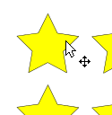
Select tool with crossed arrow icon.
Click on the yellow star in the upper left corner. A bounding box with eight handles appears.
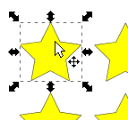
The bounding box
The bounding box is used for transformations such as resizing and rotating; it also indicates
that this item is selected and ready to be edited. This could mean changing the size, color,
position, or any number of other things.
Using the Select Tool, click on the star to the right and notice that the first star
is now deselected and only the second star is selected.
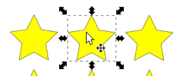
Second star selected.
Add another star to the selection by holding down the <Shift> key and clicking on
the first star. Both stars are now selected.
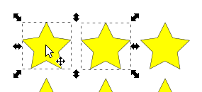
Add other items to a selection by holding down the <Shift> key.
Reposition the stars by clicking in the center of either selected star and dragging.
Since both are selected, they travel together.
Deselect the stars by clicking on the canvas where there are no objects. Alternatively,
press <Esc> (the Escape key).
Revert by choosing File > Revert. An alert box will appear warning you that you
will lose any changes made to your document - are you sure you want to reload the document...?
Click on OK. File YellowStars.svg is reloaded and the stars appear in their original
positions.
Marquee Select
Some selections may be easier to make by creating a marquee around the objects that you want to select.
With the same file, YellowStars.svg, open, switch to the Select tool (). Instead of <Shift>+clicking to select
the first two stars, position the mouse above the upper left star and then click and drag downward and
to the right to create a marquee that completely encloses the two stars.
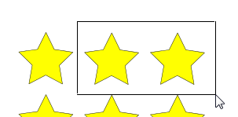
Marquee drawn around two stars.
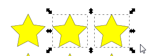
The two stars are now selected.
Grouping Objects
You can combine several objects into a group so that they are treated as a single unit.
This way, you can move or transform a number of objects without affecting their attributes
or positions relative to each other.
With the same file, YellowStars.svg, open, switch to the Select tool
(). Click outside the
top left of the first star and drag a marquee that encompasses each star on the first row to
select all three.
Choose Object > Group, then press <Esc>.
With the Select tool, click on the first star. Notice that since it is grouped with
the other two stars, all three become selected.
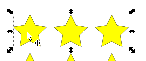
Click one, all in the group become selected.
Adding to a Group
Groups can also be nested; that is, they can be grouped within other objects or
groups to form larger groups.
With the top group of three stars still selected, <Shift>+click on the first star
in the second row.
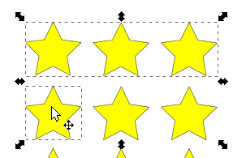
With this added to the selection, choose Object > Group.
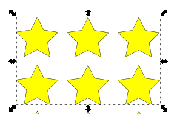
<Shift>+click on the middle star in the second row and also choose Object >
Group.
Press <Esc> when finished.
Now, click on any of the five grouped stars. See how the top and middle rows of stars
are enclosed in the bounding box.
Click anywhere outside the box to deselect the group, and then click on the third star
in the second row. Only that star is enclosed in the rubberband box. It has not been included in
the group yet.
<Shift>+click on one of the grouped stars to include the group to the "group of one."
The bounding box encloses the two top rows of stars and includes a smaller box highlighting
the one "special star."
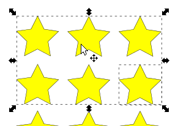
Choose Object > Group.
Click outside the box and then click on the third star in the second row. The box now
encloses the top two rows of stars, indicating that the last star you included is now part
of the group.
You have created groups within groups. This is a common technique used when designing artwork,
but can be confusing when editing existing files where grouping has been used.
Choose the Select tool () and click on any one of the grouped stars. They all become selected.
Click off the stars to a blank area on the artboard to deselect them.
Ungroup items by choosing Object > Ungroup. Note that you will have to repeat this
action for each of the groups created. In other words, to get these back to individual stars,
we have to choose Object > Ungroup four times.
File > Close without saving.
The Edit Path by Nodes Tool
There are instances when you want to select and manipulate specific line segments and nodes
without affecting other paths and nodes in an object. You can with the Edit Path by Nodes Tool.
In this part of the tutorial, you will select certain points on the stars in the top row of stars used
in the last example, and manipulate them. Before you start, you need to know that regular geometric
shapes, such as the stars, are described internally by scalable vector equations that need only the
positions of one inner and one outer point (node) to fully determine the shape of the star.
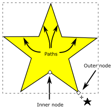
To manipulate individual paths and nodes on a star, or other type of regular polygon for that
matter, you need to strip the star or polygon of its original equations so that it is
represented internally as a series of individual paths and nodes. The original describing equations
are eliminated, so there is no previous computer knowledge of what the shape was. With this new
internal representation, you can now change the position of individual nodes.
Click on File > Open and open the Tutorial02Image01.svg file in the Tutorial02
folder.
Marquee select the three stars in the top row.
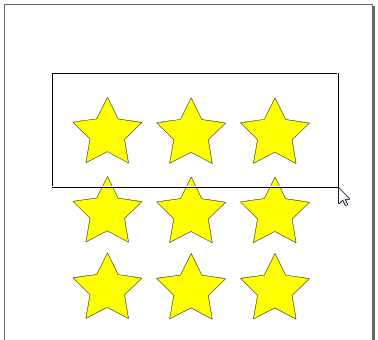
Selecting the top 3 stars
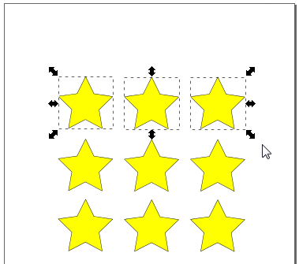
Top 3 stars selected
With the three stars still selected, choose Path > Object to path.
Click on the Edit Nodes tool (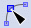).
The selected stars are now shown as paths and nodes.
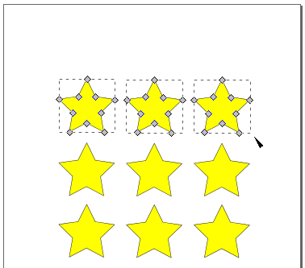
The top 3 stars appearing as paths and nodes
Click on the top point of the third selected star and drag it to the right.
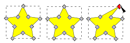
Note how the selected node turns red, indicating that it is active. When you release
the left mouse button and move the cursor off the node, it turns blue to indicate that it
is still active and ready to be moved.
Choose Edit > Undo: Move nodes to undo your latest action of repositioning the star point.
Click on the white background to deselect the stars.
Now click on the Select tool () and reselect the top three stars.
Click on the Edit Nodes tool (). Note how the stars now show nodes at all inner and outer points.
Using the Edit Paths tool, drag a marquee around the top points of the three selected stars.
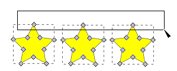
Release the left mouse button. The selected points are now colored blue, indicating that they
are now active.
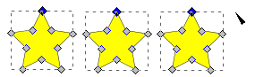
Drag the top point of the right-most star to a new location. See how all the selected top
points move in parallel with the one node you are moving.
Experiment by clicking (and <Shift>-clicking ) on different nodes and moving them around.
This grouping technique is handy when you need to move one or more parts of one or more items
the same distance in the same direction. You can also select more than one node by <Shift>-clicking
on the nodes with the Edit Paths tool. When you use this technique,
select your items with the Select tool,
choose Path > Object to path,
click on the Edit paths by nodes tool,
use the Edit paths tool to select the nodes you want to manipulate, and
move the nodes as you need.
If you don't like the positioning, you can always choose Edit > Undo: your latest action. A quick
alternative to using the Edit menu is to press <Ctrl>-z, the shortcut key, to undo your
last action. (Press <Ctrl>-z multiple times to undo multiple actions.)
Applying Selection Techniques
In this next part of the tutorial, you will use some of the techniques discussed as well as several others.
Choose File > Open, and open the Doggie_pieces.svg file in the Tutorial02 folder.
Make sure that the entire canvas is visible by pressing the 4 key (the shortcut
key for the View > Zoom > Drawing command). On the right you see the completed project,
on the left are the objects needed to create the finished dog.
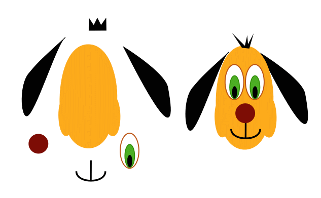
Start this lesson by hiding the Command bar, Tools Control bar, Toolbox, and color palette;
you won't need them for this part of the tutorial. Hold down <Shift>+<Alt>+p
to hide the palette, or hide the Commands bar, Tools Control bar, Toolbox, and color palette
individually using the View > Show/Hide submenu.
With Select tool (),
select the brownish-red circle. To avoid grabbing a bounding box handle and resizing
the circle, click and drag the center of the circle to slide it to its new location as the nose of the dog.
Using the Select tool, drag both ears, the tuft of hair, and the mouth into position.
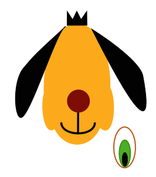
Use the Select tool to move parts into place.
Select the dog's head (light brown shape), choose Object > Object Properties, and click the
Lock checkbox to keep the head in position. Click outside the bounding box to turn it off.
You will not be able to select the dog's head until you choose Object > Unlock All.
Leave it locked for now.
You are using the solid arrow, or Select tool (), to activate an entire object and move it.
Each object that you select is made up of several anchor points. To activate these anchor points individually,
switch to the Edit paths by nodes tool ().
Click on the anchor point in the first peak, or tuft, of hair. When the individual point
is selected, it appears as a solid red diamond (active), whereas the other anchor points are gray
diamonds (inactive). When you move the Edit path tool off the active node, the node's color changes to blue,
indicating that it's still selected but not currently active. Click and drag the individual anchor
point to change its position.
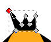
Using the Edit paths by nodes tool,
click and drag individual anchor points.
Individually select other anchor points in the hair shape and position them in different
directions. You are giving a ruffled look to the dog's hair.
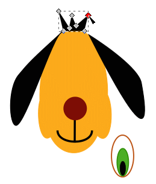
Moving individual anchor points.
Choose the Select tool. The eye is made of several parts. Use either the rubberband box
selection technique or the <Shift> key to select all three parts of the eye. Choose
Object > Group. Drag the eye into a position on the face to create a left eye.
While still pressing the left mouse button (don't release it yet), press the space bar once.
The eye is copied and can now be dragged to a new location. Drag the selected eye to the right to clone
the left eye and position it as the right eye. Release the mouse button. The dog now has two eyes.
File > Save and close the file.
Advanced Selection Techniques
When working on complex artwork, selections may become more difficult to control.
In this tutorial, we combine some of the tutorials already covered with some additional
features that will make selecting the correct items easier.
File > Open the file named AlleenMaarDeBesteFriten.svg in the Tutorial02 folder. Have both the File and Stroke dialog panel open.
If it isn't visible, choose Window > Fill and Stroke.
Note that the large words, DE BESTE FRITEN, cover and make it difficult to select
items underneath. Using the Select tool (), select the words, DE BESTE FRITEN,
choose Object > Object Properties, and click on the Hide checkbox in the Object Properties dialog.
The words will come back in the exact same location when we choose Object > Unhide All at the
end of the tutorial.
Changing the fill of all the yellow stars to white could be time-consuming, but
using the Edit Same feature reduces the trouble. Select any one yellow star and
then choose Edit > Same > Fill and Stroke. All the other stars become selected.
Make sure that the fill box is forward in the toolbar and select white from the
color palette at the bottom of the screen. The stars all change to white.
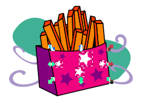
Select one of the shapes creating the French fries and then choose Edit > Same > Stroke Color.
The french fry shape had a black-colored stroke so all strokes that are black are now activated.
Using Window > Stroke palette, type 5 into the textbox to increase the weight to 5 pt.
Click in an empty area to deselect the artwork.
Choose Object > Unhide All to bring back the words DE BESTE FRITEN.
Save and close the file.
Exploring on Your Own
Experiment with shapes by creating a shape object, circle, star, rectangle, or whatever.
Clone it several times. Apply different colors and strokes to the shapes and reselect them
using the Select Same menu item. Try cloning multiple items at the same time.
Review Quiz
Why might an object that has no fill not become selected when you click on it?
How do you edit the shape of an object?
If something is blocking your view of a selection what can you do?
Review Answers
Items that have no fill must be selected by clicking on the stroke.
Using the Edit paths by nodes tool, you can select one or more individual
anchor points and make changes to the shape of an object.
If something is blocking your access to a selection, you can choose Object > Object
Properties, and click on the Hide checkbox in the Object Properties dialog. The object is
not deleted, just hidden in the same position until you choose Object > Unhide All.
{kind=link}
 ). Position the mouse over the different star shapes without clicking.
Note the crossed arrow icon that appears as you pass over objects, indicating that there is an object
that can be selected under the pointer.
). Position the mouse over the different star shapes without clicking.
Note the crossed arrow icon that appears as you pass over objects, indicating that there is an object
that can be selected under the pointer.
{kind=link}
{kind=link}